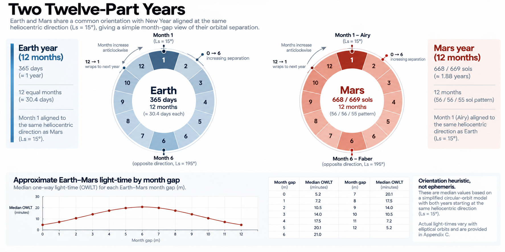
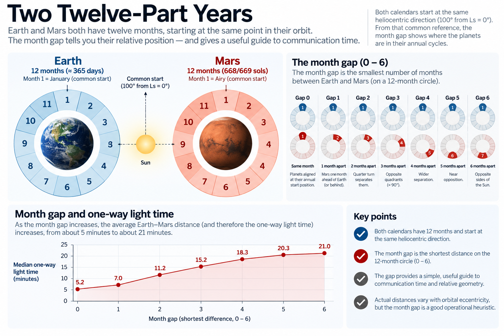

INTERPLANETARY - CONNECT
19) Two Worlds, One Timeline
Earth & Mars
Mars will not stop using Earth time because it acquires a calendar of its own.
For decades, and probably much longer, the two worlds would remain connected by families, governments, companies, scientific programmes, supply chains, legal agreements, media, finance and ordinary human curiosity. Someone on Mars may live locally by Marian dates while caring very much that it is a birthday in Manchester, the start of a trading day in Tokyo or a contractual deadline in Washington.
The problem is not to make Earth and Mars share one calendar. It is to make two local calendars legible to each other.
A Martian civil system should organise life around Mars rather than requiring an entire planet to remain permanently inside the Gregorian calendar. At the same time, deliberately making Earth dates difficult to recover would be an impressive act of administrative self-harm.
The useful goal is interoperability. A Marian date should convert deterministically into an Earth-referenced chronology once the Marian epoch has been established. Cross-world systems should be able to display both civil representations of the same event, while people develop enough intuition to understand roughly where the two planets are in their respective years and, where useful, what that means for communication.
Marian is designed to help with all three.
It does not make the calendars the same.
Two calendars, one physical event
Imagine a message sent from Mars.
Locally, the transmission might be recorded on:
MY42-08-03-05
An Earth system receiving it could attach a Gregorian date and UTC timestamp. A scientific archive might also store Mars Sol Date, Ls or another specialist astronomical coordinate.
None of those representations competes for ownership of the event. They describe different aspects of the same physical instant.
The Marian Civil Date answers:
Where does this event sit in Mars's local civil calendar?
The Gregorian date answers the equivalent question in Earth's civil calendar. An absolute or continuous time coordinate provides the bridge between them.
This is the right way to think about interplanetary chronology: not as one calendar replacing another, but as several coordinate systems sharing an underlying physical timeline.
Earth already lives with milder versions of this arrangement. A system may store a timestamp in UTC while users see local civil time. The same historical event can appear in different civil or religious calendars. Software converts among representations because the relationships are defined.
Earth and Mars add different day lengths, different year lengths and a substantial communications delay.
The principle remains translation.
Conversion needs an epoch
The Marian side of that translation becomes deterministic once MY1 has an absolute physical anchor.

Detailed figure description
Two circular diagrams, one for Earth and one for Mars, divide each annual cycle into twelve labeled sectors. Below, a plot and a numerical comparison illustrate how the difference in month positions can be used as a rough mental model for orbital geometry and communication delay. This is a visualization of a heuristic, not an exact ephemeris or light-time prediction. See Chapter 19 and Appendix E for qualifications.
Editorial note: this is a descriptive summary, not an independently verified transcription of every diagram label. Refer to the surrounding text and the Marian technical specification for authoritative numeric details where applicable.
As established earlier, MY0 begins with the recognised first human step on Mars. MY1 begins at the first Airy-0 midnight following Mars's next passage through Ls = 15°.
That historical event has not yet occurred, so nobody today can give the final Gregorian timestamp corresponding to a future date such as:
MY42-08-03-05
Before settlement, Marian dates can be modelled against synthetic epochs. After settlement, there will be a real one. From that point, ordinary calendar conversion becomes arithmetic rather than astronomy.
Conceptually:
Marian Civil Date → Marian serial-sol position → absolute instant → Gregorian/UTC representation
and in reverse:
absolute instant → Marian serial-sol position → Marian Civil Date
The implementation details belong in software and technical standards rather than in ordinary calendar use. That is intentional. Marian needs a well-defined civil chronology; it does not need to reinvent every terrestrial timestamp standard in order to interoperate with them.
Conversion should eventually be boring.
That would be a success.
Conversion is not synchronisation
Perfect conversion does not mean the two calendars remain synchronised in any ordinary human sense. They cannot.
The day lengths differ. The years differ. The months differ. The leap systems differ.
A fixed Gregorian date therefore moves through the Marian year, just as a fixed Marian date moves through the Gregorian one. There is no durable rule such as:
1 Janiix always equals 3 January
Any such coincidence would immediately begin to drift.
This is why Earth-origin holidays retained on their Gregorian dates would move through the Marian calendar. A company could not permanently equate its terrestrial year-end with a particular Marian month. An Earth birthday would not remain in the same Marian annual position.
Cross-world systems therefore need conversion, not a fixed lookup table.
The same is true within the day.
The clocks drift as well
A Martian mean solar day lasts approximately 24 hours, 39 minutes and 35 seconds of terrestrial elapsed time. That extra forty minutes means a Martian solar-day boundary does not remain fixed against UTC.
Suppose, purely for illustration, that one Airy-0 midnight coincided exactly with midnight UTC. The next would occur at roughly:
00:39:35 UTC
The following one would be around:
01:19 UTC
then:
01:59 UTC
and so on.
After roughly 36 to 37 sols, the Martian day boundary would have moved through an entire terrestrial 24-hour clock.
That has an immediate consequence for interplanetary organisations: there is no permanent equivalent of Mars office hours overlap London from two until five every afternoon.
The overlap itself moves. At one point a Martian settlement's working day may align conveniently with Europe. Later it may fit North America better. Later still, somebody in London will receive a perfectly reasonable Martian morning request at three o'clock in the morning and reconsider whether interplanetary collaboration was as glamorous as the recruitment brochure suggested.
This is not a defect in Marian. It is not really a calendar problem at all. It follows from two planets rotating at different rates.
A permanent Martian civilisation therefore needs local time that makes sense locally, while its communication systems remain capable of translating to Earth time whenever necessary. The infrastructure should do the conversion.
People should not spend their lives performing it manually.
Distance changes more than the clocks do
Different local clocks are inconvenient. Light speed changes the nature of the relationship.
Earth and Mars do not have a fixed communications delay because their physical separation changes continuously as both planets orbit the Sun. In the Marian analysis covering 2031–2120, modelled one-way light time ranges from roughly 3 to 22 minutes.
Even the favourable end is enough to change conversation. At a three-minute one-way delay, a question and reply require more than six minutes of signal travel before allowing either person time to think or speak. At roughly twenty-two minutes each way, the physical minimum for a question and answer approaches three quarters of an hour.
That is not an awkward videoconference. It is a different communications regime.
Organisations would adapt. Activities handled synchronously on Earth would become message-based. Decisions would need more context attached. Authority would need to sit closer to the place where decisions occur. Earth teams could not supervise routine Martian operations through constant conversational intervention. Families would learn to send messages without expecting immediate replies.
The phrase end of day would become especially deserving of suspicion.
None of this is created by Marian. But a civil calendar designed for an Earth-connected Mars should make the relationship easier to understand where it can.
That is where the choice of Ls = 15° produces an unusual secondary benefit.
Two twelve-part years
Both Gregorian and Marian calendars divide their respective years into twelve months. Their months are very different lengths, but the shared twelve-part structure creates a useful visual relationship.
Marian New Year at Ls = 15° was chosen partly because, around the likely founding era, Mars then lies close to the heliocentric direction occupied by Earth around Gregorian New Year.
So, very approximately:
Earth Month 1 and Mars Month 1 begin from similar directions around the Sun.
The planets then move around the Sun at different rates, so their month numbers separate. That separation gives a coarse indication of their relative orbital phase.
Imagine the two annual calendars as twelve-position circular dials. If Earth is in Month 4 and Mars is in Month 5, their month positions are close. If Earth is in Month 1 and Mars is in Month 7, they are six positions apart — the largest possible separation on a twelve-position circle.
The word circular matters. Month 12 and Month 1 are one position apart, not eleven.
The month gap is therefore the shorter distance between the two month numbers around the ring:
G = min(|g − m|, 12 − |g − m|)
where:
g = Gregorian month number
m = Marian month number
and:
G = circular month gap from 0 to 6
This is not a precision orbital calculation. It is a mental model.
That is exactly what makes it interesting.

Detailed figure description
Two Earth–Mars annual wheels introduce the idea that both calendars can use twelve labelled annual positions even while the physical years have different lengths. A series of small phase diagrams shows the two planets at various relative configurations. A lower month-gap graphic and explanatory boxes connect calendar labels to a rough intuition about separation, but do not provide actual travel times, orbital ephemerides or guaranteed communications delay.
Editorial note: this is a descriptive summary, not an independently verified transcription of every diagram label. Refer to the surrounding text and the Marian technical specification for authoritative numeric details where applicable.
The month-gap mental model
When the Earth and Mars month numbers are close, the planets tend to occupy more similar heliocentric directions. As the gap increases, their angular separation generally increases. At gaps near five or six, the planets tend to be much farther apart in their orbital relationship.
The detailed analysis finds a strong relationship between this circular month gap and modelled Earth–Mars communications delay. The easiest way to understand it is not through a correlation coefficient, but through the typical delay at each gap:
| Circular month gap | Median one-way light time |
|---|---|
| 0 | 5.2 min |
| 1 | 7.0 min |
| 2 | 11.2 min |
| 3 | 15.2 min |
| 4 | 18.3 min |
| 5 | 20.3 min |
| 6 | 21.0 min |
The progression is clear enough to be memorable. A gap of zero or one generally means Earth and Mars are towards the shorter-delay end of the range. A gap around three suggests roughly middle conditions. A gap of five or six means expect long-delay conditions.
That is probably all an ordinary user needs.
A dashboard might show:
Earth: Month 3
Mars: Month 4
Gap: 1
and give an immediate sense that communications conditions are relatively favourable.
Months later it might show:
Earth: Month 4
Mars: Month 10
Gap: 6
and the user would know to expect something much closer to the high-latency end.
An operational system should still display the actual one-way light time. The month gap explains, approximately, why the number is where it is.
That is the value of a useful mental model. It compresses something physically complicated without pretending the compression is the physics.
The limitations are important
The month gap cannot tell us the exact delay.
Earth and Mars follow eccentric rather than circular orbits. Two planetary positions with similar angular separation can still have different physical distances because each planet may sit at a different radial distance from the Sun.
The calendar months also represent elapsed civil time rather than equal orbital angles. Gregorian months vary in length. Marian months contain 55 or 56 sols. Orbital speed changes throughout both years.
Finally, the month gap deliberately compresses the entire geometry into only seven states:
0, 1, 2, 3, 4, 5 or 6
A large amount of information has been thrown away.
That is why the latency ranges for neighbouring gaps overlap. A gap of 1 does not guarantee a shorter actual delay than every possible day with a gap of 2. It tells us what is broadly more likely.
Likewise, a gap of 6 is not itself a solar-conjunction warning. Actual conjunction conditions depend on precise geometry involving Earth, Mars, the Sun and the communications link.
The month gap should therefore be understood as:
a civil orientation heuristic
not:
a communications instrument
That sentence deserves to survive any implementation of the idea. Preferably somewhere near whoever designs the dashboard.
Exact latency always wins
Any system that actually depends upon signal delay should use the real geometry.
A mission controller calculating command arrival should use ephemeris-derived light time. A communications network planning buffers and link windows should use actual orbital data. A surgeon supporting a remote intervention should not say:
Gap four, probably eighteen minutes. Close enough.
The month-gap model belongs at a different level. It helps an ordinary user understand whether Earth currently feels relatively near or far in communications terms. It helps a manager understand why a response loop that worked comfortably some months ago now takes much longer. It gives a student an intuitive connection between two civil calendars and the geometry of two planets.
It makes interplanetary latency slightly less arbitrary.
That is useful. Precision belongs elsewhere.
Why Ls = 15° matters — but only so much
The month-gap relationship also helps explain why the Marian year begins at Ls = 15° rather than at the more obvious Ls = 0° equinox. But the logic should not be reversed.
Marian was not designed by searching for the year origin that maximised a correlation coefficient. The technical analysis found that slightly different synthetic starting points can improve the month-gap statistic marginally.
Marian retains Ls = 15° because it follows from the simpler physical argument established earlier: around the intended founding era, it places Martian New Year close to the heliocentric direction Earth occupies around Gregorian New Year.
The month-gap relationship is a useful consequence of that decision. It is not the decision's sole justification.
Nor is the relationship permanently exact. Ls = 15° remains a fixed Martian tropical marker, while its particularly neat relationship with Gregorian New Year is strongest around the founding era. Orbital and seasonal relationships evolve slowly over long periods.
Marian does not chase those changes by moving New Year to preserve a cleaner Earth-facing dashboard. That would reverse the hierarchy.
The year belongs to Mars. Interplanetary legibility is a secondary benefit.
If that benefit becomes less tidy centuries later, the Martian seasonal anchor should not casually be moved to rescue it.
That would be a calendar chasing its dashboard.
Asynchronous by default
Combine the drifting daily clock relationship with variable light-time and another conclusion follows: Earth–Mars organisations cannot sensibly behave as though the other planet were merely another office a few terrestrial time zones away.
Distributed teams on Earth can usually find some period when everyone joins a call, however grumpily. Earth and Mars add two complications: the local working-hour relationship keeps moving, and every exchange carries minutes of unavoidable delay.
That changes organisational design.
Messages need enough context to survive asynchronous exchange. Decision rights need to be sufficiently local. Deadlines need to specify which civil calendar and which time reference apply. Processes that depend on rapid conversational escalation need alternatives.
A person on Mars should not have to wait forty minutes for an Earth manager to approve an obvious operational decision merely because somebody drew the organisation chart before thinking about light speed.
Marian does not prescribe how those organisations should work. Its contribution is more basic.
It gives them an unambiguous local chronology to work from.
Contracts will become less casual about time
Legal systems may encounter the same problem early.
Consider phrases that are perfectly ordinary on Earth:
payment due on 15 March
notice required within 30 days
renewal every year
response required by close of business Friday
Every one contains hidden assumptions.
In an Earth–Mars agreement, the document may need to specify which civil calendar governs the date, whether a duration is measured in Earth days or Martian sols, which local time boundary applies, whether year means a Gregorian or Marian year, and when a delayed interplanetary message is legally considered received.
Marian does not answer the last of those. That is law.
What it can provide is a precise Martian civil coordinate and canonical reference from which conversion is possible. A robust cross-world record could therefore store the Marian civil date, the relevant local-time convention and an absolute timestamp.
The resulting dispute may still be unpleasant.
At least it need not begin with two lawyers arguing about what day it was.
People still need intuition
Software could handle almost all of this invisibly. A scheduler can display both calendars. A device can find local working hours. A communications system can calculate actual light time. An archive can convert timestamps automatically.
But people still benefit from understanding roughly why the system behaves as it does.
Someone on Earth who knows a Martian sol is about forty minutes longer will not be surprised that Mars working hours keep moving through UTC. Someone on Mars who sees the two month numbers five positions apart can reasonably expect communications to be towards the slower end of the cycle.
Neither person needs to know the orbital equations.
That is what interplanetary legibility means in Marian: not making the two planets identical, but making their differences understandable.
Two local calendars, one chronology
The relationship between Earth and Mars can therefore be reduced to four ideas.
Gregorian and Marian dates are separate civil addresses on a shared physical timeline. Once the Marian epoch exists, deterministic conversion can connect them.
Earth and Mars do not maintain a fixed daily clock relationship. The Martian sol is longer, so local Martian time continually moves through terrestrial clock time.
Communications delay varies much more dramatically than either calendar. Real operations should always use actual ephemeris-derived light time.
And Marian's Ls = 15° year origin gives the two twelve-part calendars a useful coarse relationship: small circular month gaps generally correspond to shorter-delay conditions, while large gaps generally correspond to longer ones.
That final relationship is a mental model. No more, and no less.
Earth does not need to adopt Marian dates to communicate with Mars. Mars does not need to spend centuries living on Gregorian dates because Earth got there first. A shared technical timeline can connect two local civil systems while allowing each to remain suited to its own world.
Interoperability does not require uniformity.
Sometimes a common standard is the answer. Sometimes the better answer is a good interface.
For Earth and Mars, Marian chooses the interface.